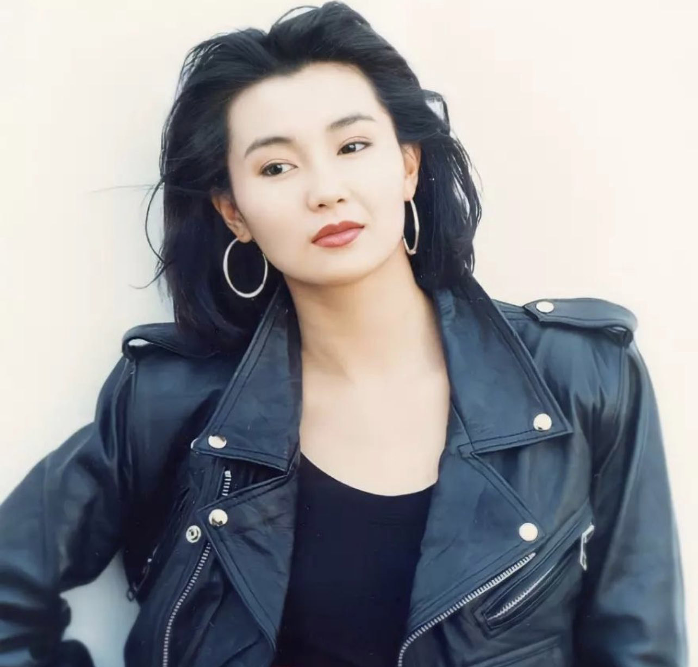
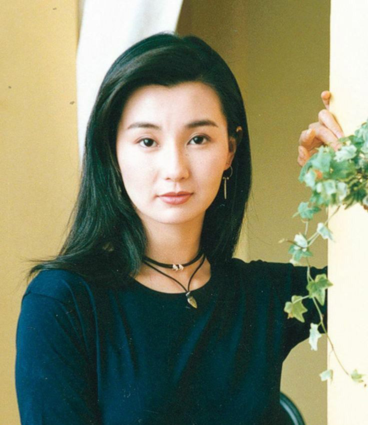
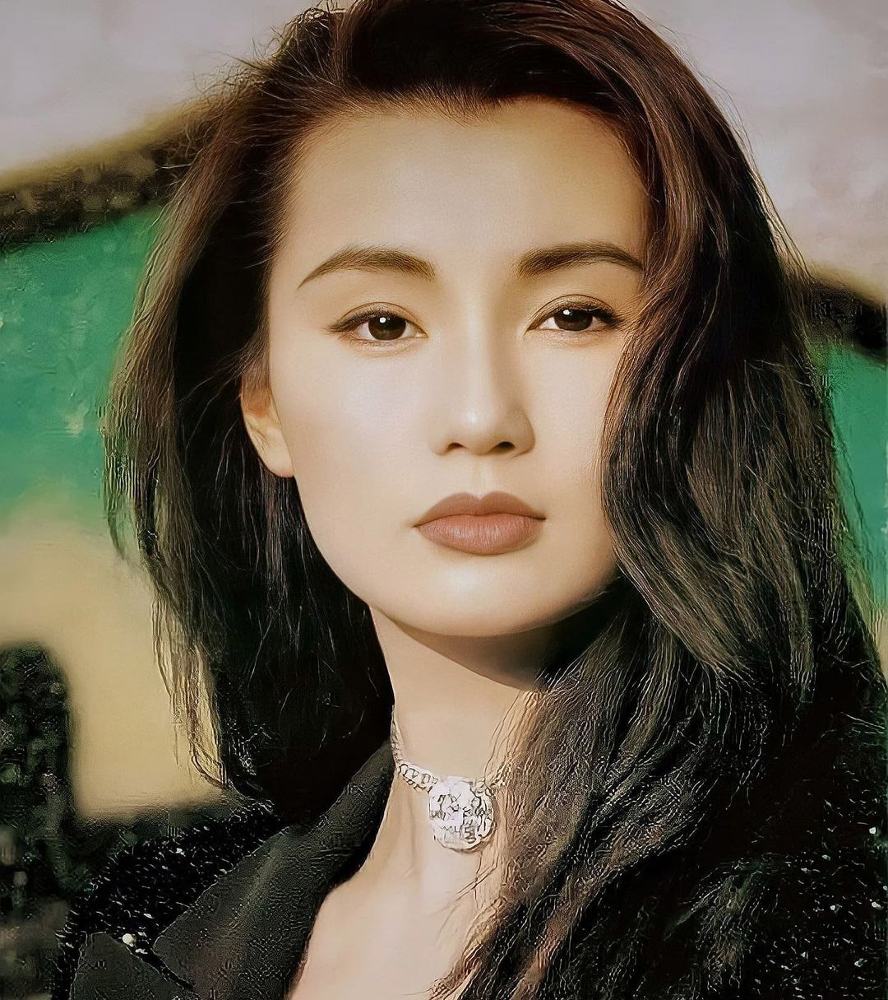
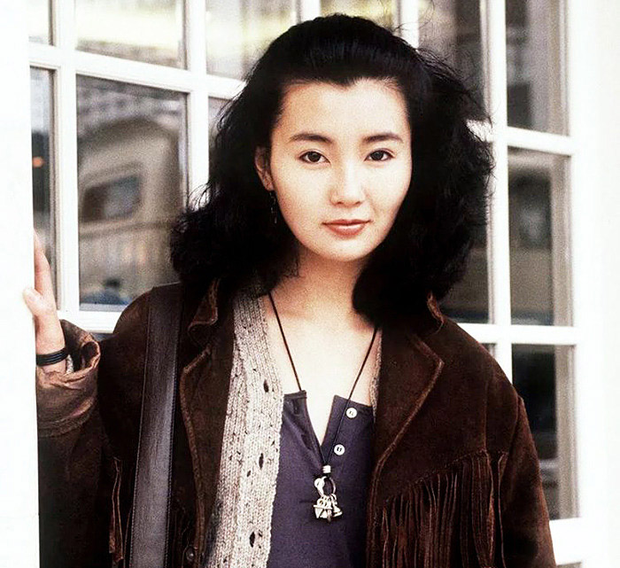
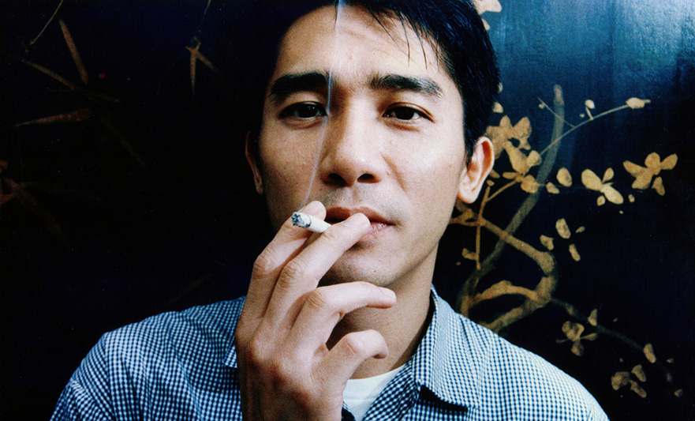
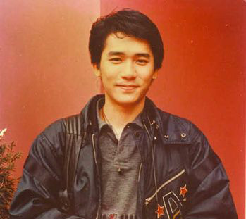

Character
Mrs. Chan and Mr. Chow
那是一種難堪的相對。她一直羞低著頭，給他一個接近的機會。他沒有勇氣接近。她轉身，走了。
It is a restless moment. She has kept her head lowered... to give him a chance to come closer. But he could not, for lack of courage. She turns and walks away.
Su is woman that cares about appearances. Having said that, Su cares about how she looks and how others perceive her. Behind her beautiful dresses and impeccable makeup, there is a very lonely woman.
Despite of having a husband, Su is alone in her marriage. Her husband is emotionally and physically absent. Mr. Su is constantly travelling due the nature of his job. Moreover, he often meets his mistress (Chow’s wife) when he’s abroad.
Chow is a man that loves his wife. He’s aware that his wife is cheating on him. Nonetheless, Chow still hopes that things will change. He wants to give their marriage another chance. However, his priorities change when he starts to hang out with Su.
Just like Su, Chow is the type of person that keeps his feelings to himself. Even his closest friends have no idea what’s really going on in his life. Although, Chow hates the idea of infidelity, through his encounters with Su, he changed his mind on this matter. When Chow developed feelings for Su, he realized that people don’t cheat on purpose. Sometimes, two people can grown fond of each other without a logical reason behind it.
Maggie Cheung
Maggie Cheung Man-yuk born 20 September 1964) is a Hong Kong former actress. Raised in Hong Kong and Britain, she started her career after placing second in 1983's Miss Hong Kong Pageant. She achieved critical success in the late 1980s and into the early 2000s, before taking a break from acting following her last starring role in 2004. She rarely makes public appearances except for fashion events and award ceremonies.
- 
- 
- 
- 
Tony Chiu-Wai Leung
Tony Leung Chiu-wai is a Hong Kong actor and singer. He is one of Asia's most successful and internationally recognized actors, and was named as "Small Tiger" among the Five Tiger Generals of TVB. He has won many international acting prizes, including the Cannes Film Festival award for Best Actor for his performance in Wong Kar-wai's film In the Mood for Love. He was named by CNN as one of "Asia's 25 Greatest Actors of All Time."
- 
- 